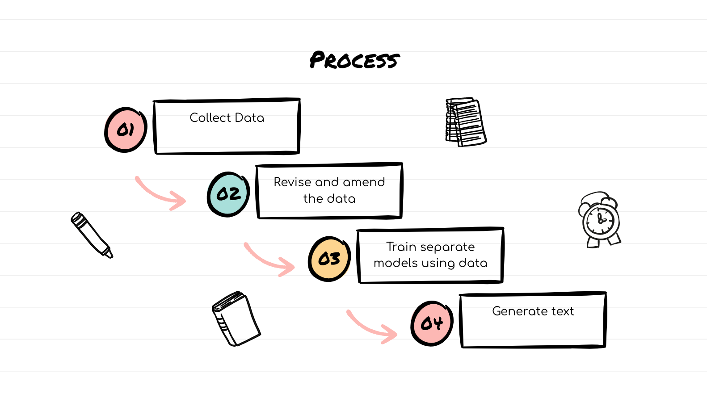

We are a passionate team of high school students interested in computer science and artificial intelligence.
TL;DR: We built a super cool RPG character generator using Python and it took a long time to train and build. Check it out here.Our product generates role-playing game characters complete with names, backstories, physical descriptions, and personality traits. The purpose of this product is to create unique fantasy characters that can be used in a variety of situations. It can be utilized when creating characters for a novel or in role playing games like Dungeons and Dragons. It can be as inspiration in fantasy storytelling, by giving you a starting point for a character that you can expand from. This AI was also made for fun. In the future, we could expand this to create character portrait images, game stats, equipment, and other interesting details that would make the characters come to life.
Our product was built using Python and GPT-2. The personality traits model dataset took information from D&D rulebooks, data generated from GPT-3, and a couple websites that listed RPG personality traits. The backstory model used a dataset containing sample backstories from Elden Ring, fantasy characters, and GPT-3 generated backstories. The physical description model used descriptions generated by GPT-3. Some datasets, like the physical descriptions and personality traits, were very hard to create because there was not very much information available on these subjects. Because of this, we produced some data with GPT-3 using a prompt.
Here was our process:
The first step was to gather data. Since we wanted to generate backstories, physical descriptions, and personality traits, we had to create 3 different data sets and train 3 different AI models. The personality traits model dataset took information from D&D rulebooks, data generated from GPT-3, and a couple of websites that listed character personality traits. The backstory model used a dataset containing sample backstories from Elden Ring, fantasy characters, and GPT-3 generated backstories. The physical description model used descriptions generated by GPT-3. Some datasets, like the physical descriptions and personality traits, were very hard to create because there was limited information available on these subjects. Because of this, we produced some data with GPT-3 using a prompt.
The second step was to clean up the data. Since we were collecting data from multiple sources, we had to organize all of the data into 3 text files containing the backstories, physical descriptions, and personality traits. Then, we added start and end tokens to the beginning and end of each sentence to train the AI model on how to start and finish sentences.
The third step was to train our AI models. The tools we used were Open AI Playground, Cocalc, and Google Colab. We used Distil GPT-2 to train our model because it was the most efficient for this project. The personality traits AI model took 2 hours and 30 minutes to train with 50,000 steps and a batch size of 8. The physical descriptions AI model took 4 hours and 8 minutes to train with 80,000 steps and a batch size of 64. The backstories AI model took the longest amount of training; 16 hours and 17 minutes to train with 50,000 steps and a batch size of 64.
The fourth and final step was to generate text using our trained models. Below are generated texts from each respective model:
Personality: “This person is very ambitious and always striving to be the best. They're very competitive and always looking to one-up others.”
Backstory: “When she was sixteen, her family went out into the wilderness to gather territory. She was all alone for the first time in her life. She felt angry and abandoned, but she survived and made it home.”
Physical Description: “Her skin is covered in glitter, and her hair is a rainbow of colors. She's wearing a dress made from flower petals, and she smells like springtime.”
“He has short black hair, and his eyes are a deep brown. He's built like a brick wall, with muscles rippling under his clothes. He usually wears whatever is practical for the situation, but he always looks ready for a fight.”
Our development process also came with challenges. Finding large databases to train our models was difficult because we were looking for very specific information on character information. We also had to ensure all of our data was consistent and capable of training our AI models. Training took a lot of time as Cocalc and Google Collab are both very slow and limited in terms of efficiency.
Now that you know everything about our product, you should go check it out here! :)